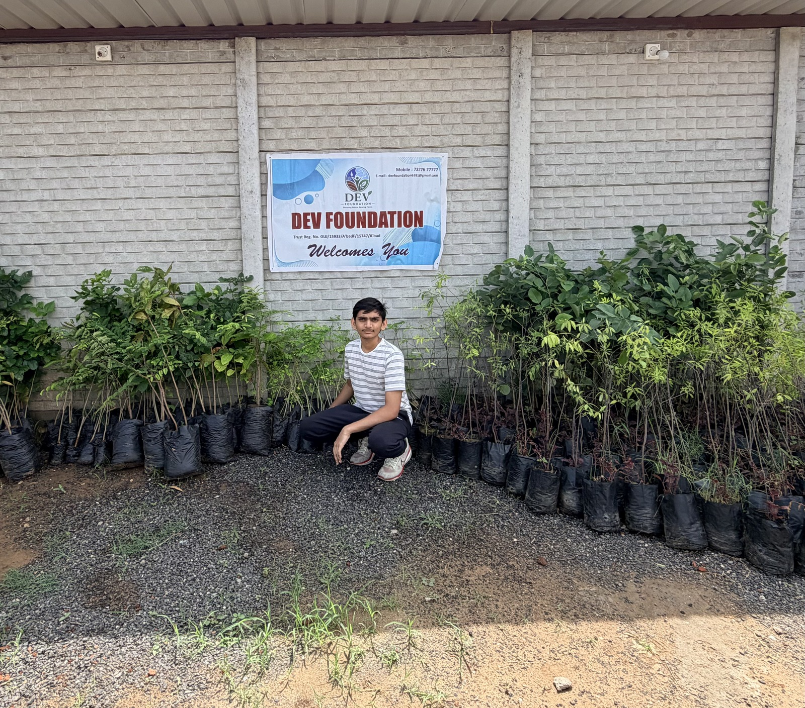

Every big thing starts small. Ours started with a birthday, a sapling, and a family that kept showing up — for fourteen years.
The idea took root with Kartik Panchal. It was simple, almost small: every time someone in the family had a birthday, they would plant a tree. Not a party favour — a promise. And every World Environment Day, they would plant again.
No banners, no committee, no name yet. Just a family and a shovel, year after year.
Gradually, the rest of the family joined in — including a young Devarsh Panchal, who grew up thinking this is simply what birthdays are for. The count grew quietly: hundreds of trees, then thousands. Many were planted across Ahmedabad; many more were gifted to people to plant and care for themselves — because the goal was never just trees, it was the habit of caring for them.
Along the way the family's care widened beyond the environment — over 1,000 books, biographies of successful people, donated to government-school students. When COVID-19 hit, donations went to the underserved.
What had been a family tradition became DEV Foundation — an organised effort for the environment and community welfare, true to its tagline: Nurturing Nature, Securing Future.
The work now reaches children directly: fire-safety training for 300 orphaned children with an expert (run in three batches of 100 over six months), a creative clay-art competition for 100 students, and a heat-wave safety seminar during Ahmedabad's record-breaking summer.
Around 53,000 trees. Over 1,000 books. More than 400 children trained, taught and inspired. And the same family ritual at the heart of it all — still planting, every birthday.
In the 2026 monsoon we ran our biggest drive yet — over 3,000 saplings in a single week, planted in the season when young roots stand the best chance of surviving.
The next chapter is bigger: more drives, more programs, and more people joining what one family started.
Three simple ideas guide everything we do.
Care for nature the way you care for family — regularly, personally, for life.
Put great books and practical knowledge into young hands — imagination follows.
Prepare children for real dangers — fire, heat, emergencies — so they're ready, not scared.

Devarsh Panchal is the President of DEV Foundation and a business student at the University of San Francisco. The idea for the foundation first took root with his father, Kartik Panchal, and grew as Devarsh and the rest of the family joined in — turning a simple habit of planting trees on birthdays into a fourteen-year mission for the environment and community.
Today he leads the foundation's programs and its next chapter of growth, carrying a childhood ritual forward as an organised movement.
Join a drive, spread the word, or fuel the next 50,000 trees.
Donate via UPI